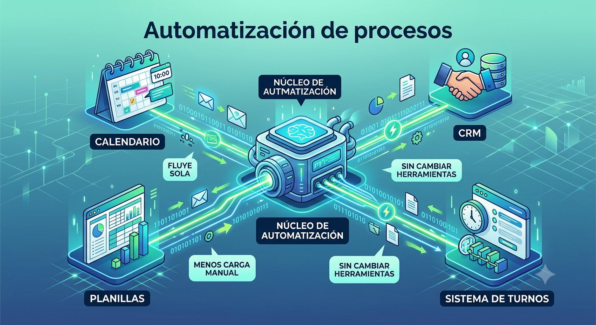
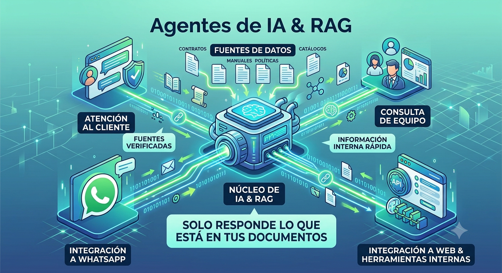
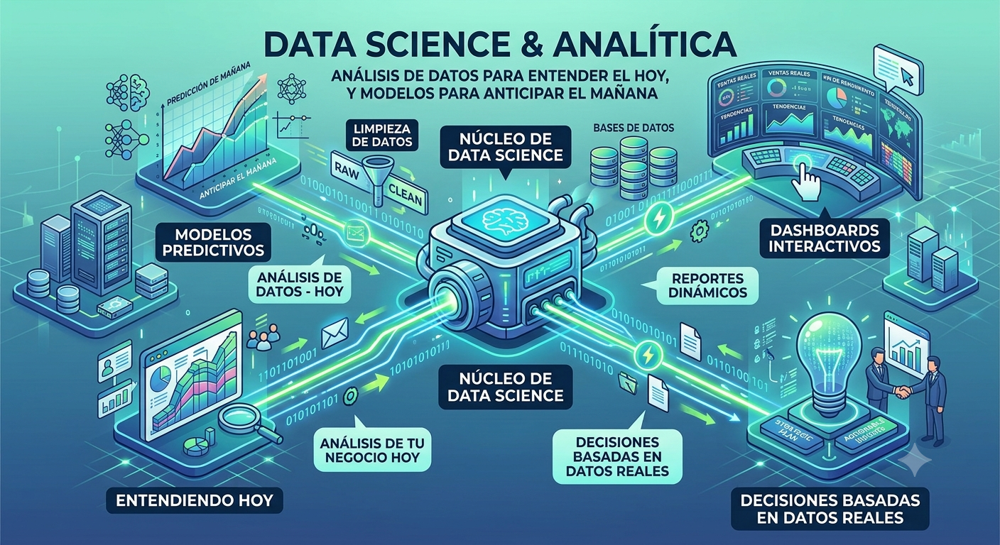
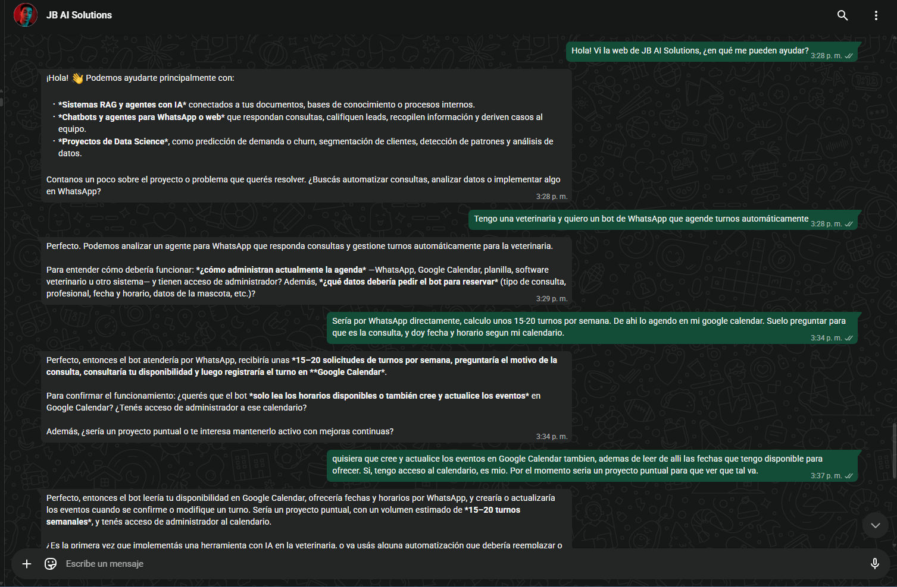
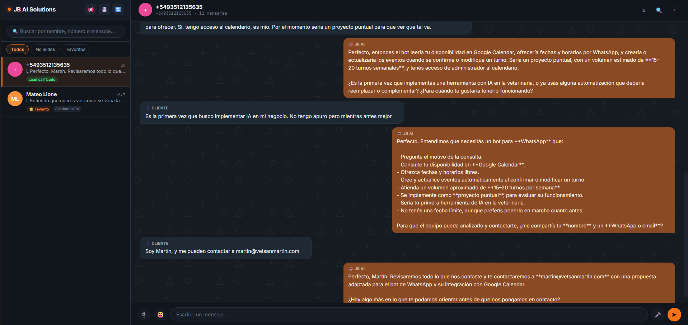
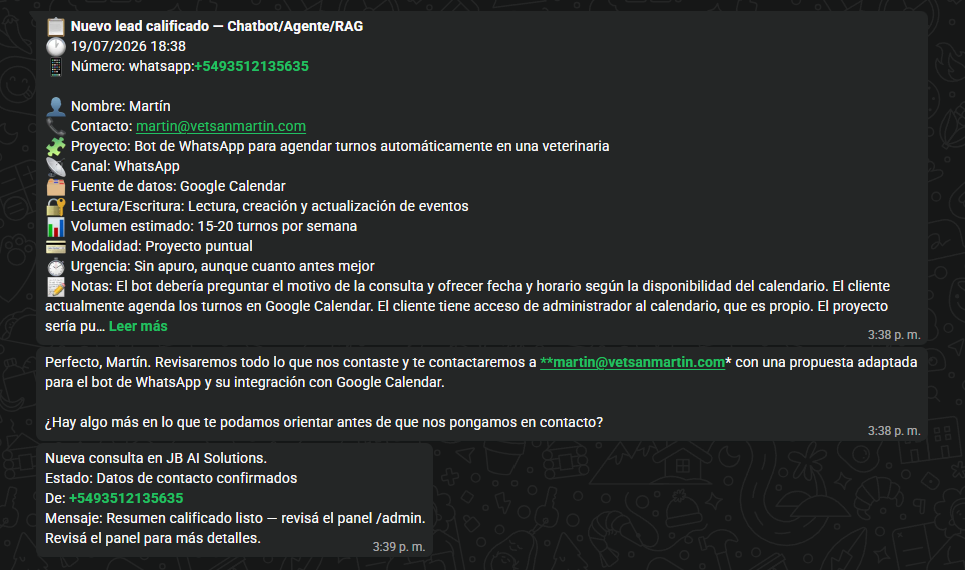

Diseñamos agentes de IA con RAG que responden solo con el contexto real de tus documentos, automatizamos procesos conectando las herramientas que ya usás, y analizamos tus datos para que decidas con información, no a ciegas.



No es solo "no llego a contestar el WhatsApp" — es información dispersa, procesos manuales que se repiten, y decisiones que se toman sin mirar los datos que ya tenés.
Contratos, manuales, políticas internas, planillas — repartidos en mil lugares, y nadie los encuentra rápido cuando hace falta.
Atención al cliente, carga de datos, seguimiento — tareas que se hacen a mano todos los días y no escalan con tu equipo.
Tenés información valiosa acumulada, pero nadie tiene el tiempo (ni las herramientas) para analizarla y sacarle provecho.
No vendemos una plataforma genérica — diseñamos la solución específica que tu negocio necesita, sea para tus clientes, para tu equipo, o para ambos.
Agentes que responden con el contexto real de tus propias fuentes — contratos, manuales, políticas, catálogos. Para atención al cliente, o para que tu equipo consulte información interna sin perder tiempo buscando.
Conectamos tus sistemas con las herramientas que ya usás — calendario, planillas, CRM, sistema de turnos — para que la información fluya sola entre ellos.
Análisis de tus datos para entender qué está pasando en tu negocio hoy, y modelos para anticipar qué va a pasar mañana.
Nos involucramos en cada etapa para que el resultado se ajuste exactamente a como trabaja tu negocio.
Qué información manejás, qué se repite todos los días, y quién lo va a usar — tus clientes, tu equipo, o vos.
Un flujo pensado específicamente para tu negocio y tu forma de trabajar.
Antes de que hable con un solo cliente real, lo testeamos a fondo.
Ajustamos el agente con el tiempo, a medida que tu negocio cambia.
Estos son los principios que guían todo lo que construimos.
Cada regla y cada flujo están pensados para tu proceso real, no para encajarte en una plantilla.
Tu agente corre en tu propia infraestructura — tu información no queda alojada en un tercero.
RAG, automatización y Data Science combinados: el mismo enfoque sirve para atención al cliente, uso interno de tu equipo, o análisis de tus datos.
Sin intermediarios: hablás con la misma persona que diseña y escribe el código de tu agente.



Este es apenas un caso de uso: un agente que atiende WhatsApp para JB AI Solutions. Entiende el tipo de proyecto que busca cada contacto, sigue un checklist de descubrimiento según cada caso, y avisa apenas hay un lead calificado — con nombre, contacto y detalle del proyecto. El mismo enfoque (RAG + reglas a medida) sirve para un agente interno, un asistente en tu web, o un análisis de datos.
Escribinos por WhatsApp y en minutos te contamos si tu proceso encaja para automatizarlo.
💬 Escribinos por WhatsApp